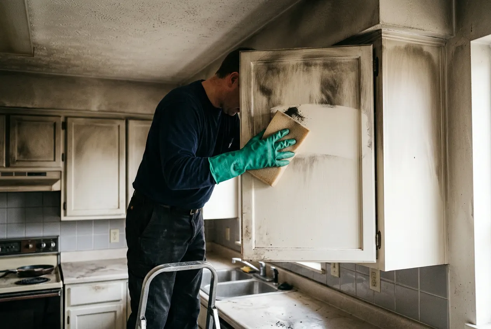

In short
- Don't go back inside until the fire department says it is safe.
- Secure the property the same day with board-up, tarping and fencing, and keep receipts.
- Throw away food exposed to heat, smoke, soot or firefighting chemicals.
- Document everything before cleaning, and don't try to wipe soot yourself. It smears and sets.
The fire trucks leave, and suddenly you are standing in front of your home with no idea what comes next. Most people have never done this before. This checklist covers the first day, in order, so you can focus on your family and let the rest happen one step at a time.
Hour 0: Safety and the fire department release
- Don't go back in until the fire department says it is safe. Fires can rekindle, and structural damage isn't always visible.
- Ask the fire department for the incident or report number. Your insurer will ask for it.
- Leave utilities to the professionals. Gas, power and water may have been shut off at the meter. Don't turn them back on yourself; the utility or a licensed contractor should check them first.
- Find shelter for tonight. Family, friends or a hotel. The American Red Cross offers immediate help to families displaced by home fires, and your policy may cover additional living expenses.
- Keep pets close and under control. Debris, ash and broken glass are dangerous for animals too.
Hours 1 to 4: Call your insurer and secure the home
- Call your insurance company or agent to report the fire. Ask how additional living expenses work under your policy and how to keep receipts.
- Secure the property. Openings left by the fire or firefighting need to be closed the same day to keep out rain and intruders: - Board-up of broken windows and doors. - Roof tarping where the roof was opened or burned. - Temporary fencing if the house is exposed.
Your policy expects you to prevent further damage, and emergency services like these are usually part of a covered claim. Keep every receipt. 3. Ask the police to keep an eye on the property if you won't be there overnight.
Hours 4 to 12: Document before anything is moved
Once it is safe to enter with the fire department's release:
- Photograph and video every room, including rooms that look untouched. Smoke travels through walls, ducts and closets.
- Start a contents list. Room by room, write down what was there. Phone photos from the past year and online order history help you reconstruct it.
- Find important documents: IDs, passports, insurance papers, deeds, prescriptions and anything in a safe.
Don't throw away damaged items yet. Your adjuster may need to see them.

IllustrativeFood, medicine and what to throw away
Federal food safety guidance is clear on this: throw away food that has been near the fire. Food can be damaged by the heat, by smoke fumes and by the chemicals used to fight the fire.
- Discard anything exposed to heat, smoke, soot or firefighting chemicals, including food in the refrigerator, since fumes can reach it.
- Discard canned and jarred food that was exposed to heat. Heat can activate spoilage bacteria, and extreme heat can split cans and jars.
- Replace medications that were exposed to heat, smoke or water. Ask your pharmacist about refills after a disaster.
Hours 12 to 24: Smoke, soot and the start of restoration
It is tempting to start wiping. Don't. Soot is oily and acidic. Water and household cleaners usually smear it deeper into paint, grout and fabric, and acidic residue can etch surfaces and stain the longer it sits. The best thing you can do on day one is get professionals in early, so the cleaning happens in the right order.
What a fire restoration crew does first:
- Assess the structure and map smoke and water damage. Water from firefighting is often the bigger problem in rooms the fire never reached.
- Dry out firefighting water before it turns into mold.
- Protect what can be saved from further soot damage, and pack out contents for off-site cleaning when needed.
- Start odor control at the source, rather than masking it.
The days after the first day
Once the home is secure and stabilized, the work moves to cleaning, contents, odor removal and, where needed, rebuilding. Fire jobs involve more decisions than almost any other loss, about what to clean, what to replace and how to match finishes. A single project lead who stays with you from board-up to the hand-off to rebuild keeps those decisions from falling through the cracks.
If you have had a fire, take care of your family first. When you are ready, request dispatch and we will start with board-up and a walk-through, in that order.
Frequently asked questions
When can I go back into my house after a fire?
Only after the fire department releases the property and tells you it is safe to enter. Even then, structural damage, hot spots and damaged utilities can be hazards, so go in with someone, in daylight, and don't turn utilities back on yourself.
Can I keep canned food from my kitchen?
Federal food safety guidance says to throw away food that has been near a fire. Heat can activate spoilage bacteria in cans and jars, smoke fumes can get into packaging, and firefighting chemicals can't be washed off food.
Why shouldn't I clean the soot myself?
Soot is oily and acidic. Wiping it with water or household cleaners usually smears it deeper into paint, grout and fabric, and acidic residue can etch surfaces the longer it sits. Professional cleaning uses dry sponges, specialized cleaners and odor treatment in the right order.
Who pays for board-up and emergency services?
On a covered fire loss, emergency services like board-up, tarping and fencing are usually part of the claim. Keep every receipt and tell your adjuster what was done and why.
Sources
- American Red Cross - What to Do After a Home Fire
- USDA FSIS - Fires and Food Safety
- USDA FSIS - Keeping Food Safe During an Emergency
This article is general information, not legal, insurance or medical advice. Images are illustrative.